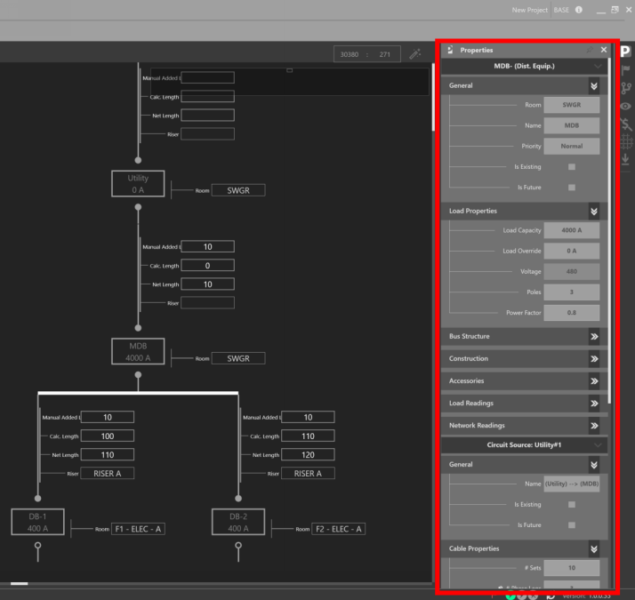
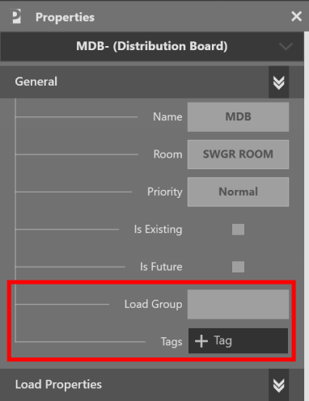

Properties Explorer¶
The Properties Explorer displays the various properties associated with the current selection.

Note that the Explorer window can scroll, collapse, and expand sections to view additional properties.
Tags and Load Groups¶
Tags are a way to easily find and organize information. They can be used in the Studies to further query data about your models. Load Groups are used in a similar fashion.

Tags and Load Groups¶
For more property definitions and information, see our Equipment Properties Index: